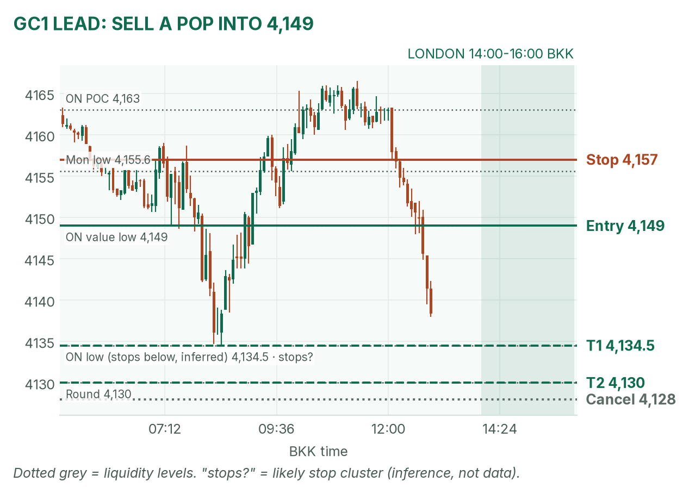
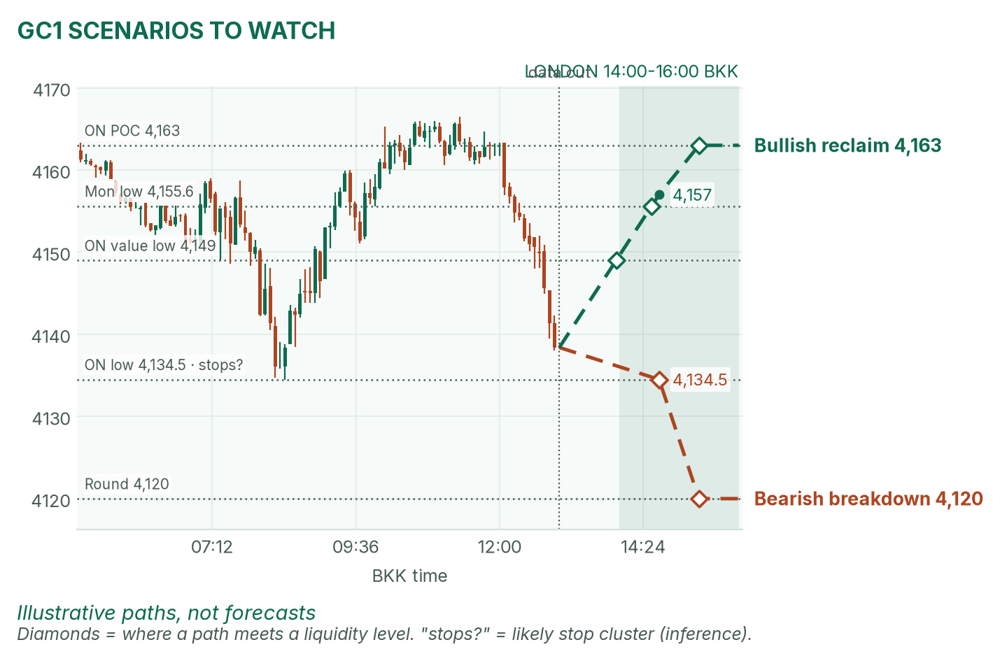
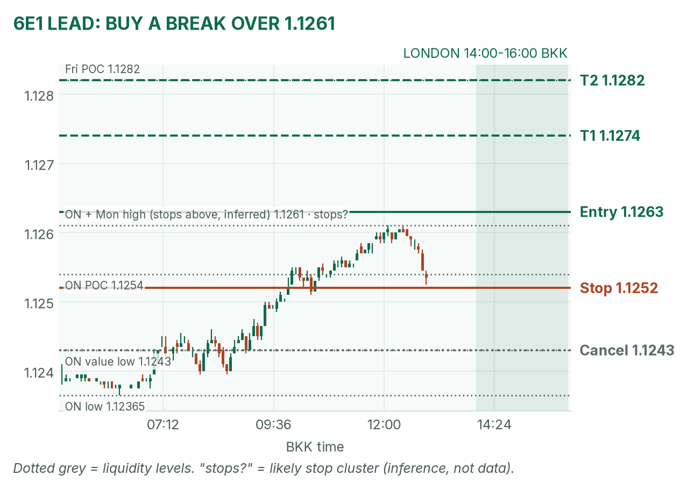
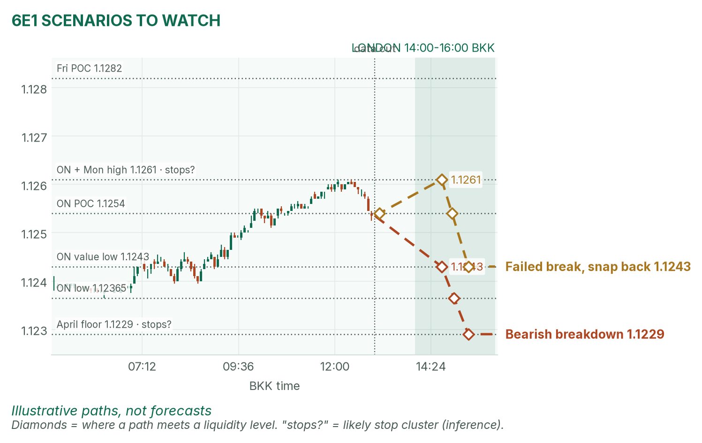

Gold is sliding into the open. The euro is pressing its ceiling.
Window 14:00–16:00 BKK, London's first two hours. Data cut 13:00 BKK: GC 4,138.4, 6E 1.12535 (TopstepX Z26). Levels only. Ideas, not advice.
Summary
GC: sell a bounce into 4,148–4,151 that fails. Stop 4,157, targets 4,134.5 and 4,130. About 44%.
6E: buy a 5-minute close above the 14:00–14:30 range high and 1.1261. Stop 1.1252, targets 1.1274 and 1.1282. About 40%.
No scheduled release inside the window. French markets reopen at 14:00: that is the event risk.
Flat by 16:00, no matter what.
The market story
On Monday yields rose together with stocks: the 10-year climbed to about 5.14%. Yields rose, so bond prices fell, and gold's opportunity cost (the interest you give up holding metal) went up. Gold lost 0.5% and has kept falling: it broke Monday's low (4,155.6) at 12:15 and printed 4,138 by 13:00. It sits under its 20-day average (4,210) and both 4-hour averages (4,174 / 4,181). The trend is down on every timeframe I check.
The euro is quieter. The dollar index (DXY) is down 0.18%, and 6E climbed all night to 1.1261. That is exactly Monday's high, a double top (two highs at the same price, where stops tend to sit just above). France is the catch: its bond market reopens at 14:00 after Monday's selloff.
How I read it: gold is a trend to sell on bounces, the euro is a ceiling to watch for a break.
News (BKK)
Time
Event
Forecast
Prior
Read
13:00
UK jobless rate
5.0%
4.9%
Out before the window; mostly a pound story. Print not checked.
14:00
European cash open, French markets reopen
–
–
Calm French bonds help 6E; new stress sinks it.
19:30
US building permits
1.40m
–
After the window.
No release in the window, so no no-trade zone. Avoid entries in the first 5 minutes after 14:00 while French prices reset.
Levels to watch
Level
GC
6E
Overnight high
4,166.5
1.1261
Overnight POC (busiest price)
4,163
1.1254
Overnight value area
4,149–4,165
1.1243–1.1261
Overnight low
4,134.5
1.12365
Monday high / low
4,211.2 / 4,155.6
1.1261 / 1.1213
Monday POC
4,197
1.1238
Typical window range (median / 80th pct, 20 days)
18 / 27 pts
20 / 32 pips
Gold (GC1)
Bias: bearish. Price is below every average, below Monday's low, falling 25 points in the last hour. My London gold rule fades the 14:00–14:30 range; with this trend, only the top-side fade fits.
The trade: bearish fade of a bounce
Entry
4,148–4,151 (plan 4,149): a bounce into the overnight value low and April's 4,151, then a 5m close back below 4,148
Stop
4,157: above Monday's low (4,155.6), which is now a ceiling
Price trades 4,128 before entry (move spent), a 15m close above 4,157, or no bounce to 4,148 by 15:15
Probability
~44%, an estimate. Basis: London gold ranges mostly failed in my Aug–Oct study (not significant); the stop is about two 5m ATRs (average bar size, 3.6 pts), and T1 is under a typical window.
Why: sell where buyers gave up, with the trend. No bounce, no trade: I won't chase a short at 4,138. April agrees: higher yields are pressing gold, and 4,151 is her line.

GC 5-minute bars to 13:00 BKK, window shaded. Monday's low (4,155.6) flipped from floor to ceiling.

The other two setups as illustrative paths; diamonds mark liquidity touches.
Scenarios to watch
Bearish breakdown: a 15m close below 4,134.5 runs the stops under the overnight low. Aims for 4,120.
Bullish reclaim: two 15m closes back above 4,157. Aims for the overnight POC, 4,163.
Euro (6E1)
Bias: mildly bullish. The euro is above both 4-hour averages (1.1245 / 1.1247) but still under its 20-day average (1.1304), a bounce inside a bigger downtrend. My London rule for 6E is to trade breaks of the 14:00–14:30 range.
The trade: bullish range breakout
Entry
1.1262–1.1265 (plan 1.1263), on a 5m close above the 14:00–14:30 range high and 1.1261
The range high is already above 1.1270, or a 5m close below 1.1243 before entry
Probability
~40%, an estimate. Basis: euro London breakouts averaged +0.31R in my study (26 sessions, not significant); 19 pips to target is about a full typical window.
Why: a break of a double top usually trips the stops above it, which feeds the move. April agrees: she calls the euro the steadiest of the three, with 1.1300 the test. If French bonds sell off at 14:00, skip it.

6E 5-minute bars to 13:00 BKK. Two highs at 1.1261 make the trigger.

Breakdown and snap-back paths.
Scenarios to watch
Bearish breakdown: a 5m close below the range low and 1.1243. Aims for 1.12365, then April's floor at 1.1229.
Failed break, snap back: a poke over 1.1261 that closes back under it within 15 minutes. Aims for 1.1243.
NQ (not traded in London): 29,600.75, down 0.51% from Monday's close, under April's 29,638.5 line.
Before you click
ORB bases. GC London: 14:00–14:30 range, fade to value. 6E London: 14:00–14:30 range, trade breakouts.
Checklist. 1) Room to today's max loss? 2) Within daily rules? 3) No release within 30 minutes? 4) Agrees with the bias? 5) At a marked level? 6) Setup tagged? 7) Entry, stop, 1R partial, target set? 8) Calm, not chasing?
Reset (60 seconds). Breathe in 4, hold 4, out 6, five times. Name the feeling in one word. Say the plan aloud. "Eager" or "frustrated"? Wait 5 minutes.
TopstepX Z26 bars, read-only; overnight starts 05:00 BKK. Calendar, yields, DXY and France: April's pre-London brief.